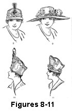
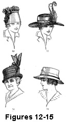
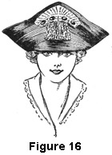

1922—Millinery
by Charlotte Rankin Aiken, B.A.
Chapter XIV—FORM OR SHAPE IN MILLINERY
Choosing a Hat
"I think I'll get a tricorn," said a friend of mine, and a tricorn she bought forthwith. In this way many people decide the shape of the hats they wear. "I want a large-brimmed hat or a poke," one thinks and tries to find the prettiest hat of the type previously decided upon. This method does not always result in securing the most becoming hat, unless from previous experience the customer first considers what shape is best suited to her face. In addition to the question of color, there is the equally important problem of the lines of the hat. It is necessary to fit the hat to the head to determine its becomingness.
Importance of the Lines of a Hat
The power of the line is almost inconceivable. Faces seem to grow shorter or longer, fuller or thinner, noses appear to raise or to lower their tips, and even eyes seem to grow slanting or straight, large or small, under the influence of the shape of the hat.
One artist says of hats: "The funny punch in the brim may bring out all the gayety of a face; the long, soft droop may accentuate its pathos; the jaunty upfling on the side may give it a sudden brave note," whereas: "the wrong line may accentuate in a face, not its bravery but its coarseness, not its prettiness but its pettiness, not its pathos but its heaviness."
The science of this witchery of line is elusive and only generalities can be stated concerning it, but the same persistent, alert observation and effort by which your eye for color is cultivated will develop sensitiveness to the magical influence of a line.
The shape of the hat may be analyzed under several headings:
- The relation of the parts to each other.
- The kinds of lines, curves, and angles, and their relation to each other.
- The relation which the form of the hat bears to the different proportions of the faces and heads of different individuals.
Relation Between the Parts of a Hat
The relation of the parts of the hat to one another has to do with the amount of trimming and the size of the brim in proportion to the crown.
There should be the right proportion between the width of the brim and the height of the crown. A poorly proportioned hat may look top-heavy or too much like a pancake. However, rightly arranged and massed, trimming may correct this fault in a hat.
Another way in which a hat may offend the eye is by the appearance of too much weight at the back, front, or side. A hat should look as though it would stay upon the head of the wearer without great effort upon her part. If an unusually large amount of trimming is upon one side of the hat body or brim or at the back or front, it should be there only to bring out or to correct something in the face. For instance, a head that is too narrow from back to front, may wear a hat with an extra mass in the back.
Lines, Curves, and Angles, and Their Relations
Lines are either straight, broken, or curved. In a hat, perfection of curve makes a beautiful shape. The curved lines should seem to flow into one another, or to grow out of one another; they should not come to abrupt stops, but go on invisibly in our imagination.
A peculiar characteristic of a line is that when the eye once rests upon it, it tends to follow the direction of the line; this is why the most skilfully designed curves seem to grow out of each other. For instance, trimming often softens into a delicate little curve the otherwise sharp angle at the base of the crown where it joins the brim. If the hat is made up of curved lines, the trimming should follow these in order to be artistic.
If the hat has been fashioned stiffly in a more tailored style with broken lines and angles, the decorations are correspondingly stiffer, more angular, and tailored. This principle should guide one in choosing trimming Have you not noticed as a general thing that soft, floppy hats have more curving, flowing, graceful trimmings than tailored hats, which favor straighten feathers, stick-ups, stiff bows, and other angular trimmings? Trimming which sticks right out from some spot on a hat is apt to be inartistic, awkward, and difficult to wear. Lines which curve and grow out of one another are said to have rhythm, like a flowing melody in a song. Sharp angles and lines suddenly breaking away from the direction in which the eye expects them to go are harder to handle. Certain seasons bring into favor more artistic shapes and methods of trimming! than do others.
Symmetry in a Hat
If a hat is exactly the same on one side as the other, that is, if one side, trimming and all, supposing it folded over were to coincide with the other, the hat is said to be symmetrical. Such a hat is more difficult to wear than one which has different but well-balanced sides, and if slightly askew is apt to call attention to the fact that it is not on straight. A symmetrical hat never should be worn by a person with irregular features. A very pretty girl whose nose is slightly to one side cannot wear a symmetrical hat nor have her hair parted in the middle without calling attention to the irregular feature.
Balance
By a well-balanced hat is meant one in which the weight or mass on one side balances the other. For instance, if a mass of trimming is on one side, there should be more brim on the other to balance it. Color cleverly used helps in securing proper balance. A bright bit of color which attracts the attention may outweigh a larger mass on the opposite side of the hat.
One side of a trimmed hat should appear to have the same mass or weight, if not the same shape, as the other side. Two curves of equal length are not so good as two of unequal length. Too much contrast or variance is as bad as too much similarity in a hat.
Adapting the Size and Shape of a Hat to the Wearer
All these relations of line and mass of the hat are most important in connection with the person who is to wear it. The type of her face, the size and shape of her head, and her figure must be considered.
A dainty little lady does not look well hidden under a hat too large for her. The husband of a certain woman insisted on her wearing large hats, which made her look thin, and she could not change his ideas because she did not know enough about form to convince him that he was wrong.
A large woman looks ridiculous in a hat that is either too small or too large. She should divert attention from her size by avoiding extremes.
A tall, well-proportioned woman, or one of medium height, may wear a large hat, unless she has a thin face.
A short woman should not be made to look shorter by a flat, low hat, any more than the height of a tall woman should be much increased by a high hat.
A hat that extends beyond the width of the shoulders is considered inartistic.
The lines of the hat when on the head have to be considered in their relation to the lines of the face in order to bring out good features and to make poor ones more attractive.
There are a number of general types of faces, but these are sometimes changed or modified by some unusual element in the face, head, or person, so that while the following discussion of types and the shapes of hats that suit them is true in a general way, you will wish to test its application for yourself. Study the lines of people's hats and see how they affect the faces of the wearers. You cannot do this in imagination. The best method is to try hats upon your friends and to analyze the effect of each hat you place upon the head of a customer.
The Full, Round Face
A full, round face needs to have this fullness reduced, so that threatening fatness may look like soft, normal curves. The face needs lengthening generally and reducing in size.
For such a face a small hat is bad if it has no brim or a turned-up brim. Medium and large-brimmed hats are more becoming. (See Figures 8 and 9.)
A hat with large deep curves would probably not look so well as one with a moderately curving or a straight brim, as the curves in the face are too broad already.
A sailor looks well on a woman of this type, and also a brim turned down slightly on one side and up on the other. It is becoming to have the brim wider in front than at the sides, as this also lessens the round effect of the face.
Figure 8. A Full Face Cannot Wear a Turban
Figure 9. A Full Face Looks Well in a Large-Brimmed Hat
Figure 10. A Snub-Nosed Person Should Not Wear a Turban
Figure 11. A Person with Regular Features Can Wear a Turban
Flat Features
The person with flat features is a type similar to the one with round features in the treatment needed, so that the same suggestions apply to her. An oval or a round hat, unless the front is deeper than the back, increases the flat appearance of her face, but a brim wider in front would be becoming, unless she had a snub nose.
Snub Noses
To avoid accentuating a decidedly snub-nose, avoid a crown of round conical shape or hats that turn up sharply in front, or that have no brim in front. ( See Figures 10 and 11.) A brim of medium or large size will hide a snub nose and tend to make it look straighter.
The Thin Face
Softness can be given to the lower part of a thin face by wearing the hair low and not too tight upon the head. Waving it helps also.
A small hat with a narrow or up-turned brim is becoming to the thin-faced woman. (See Figure 12.) She can also wear large crowns and shapes that are mostly crown. However, her nose may be too sharp or too large for the up-turned brim in the front of the hat.
A thin face with a sharp prominent nose does not look well in tricorns. A large hat makes a thin face look too peaked, and small by contrast. (See Figure 13.) A small hat brings out all the fullness and delicacy of curve that there is.
The oval shape, or one narrower from side to side than from back to front, is good for her. She should avoid hats with conical crowns.
Figure 12. A Thin Face Looks Well in a Turban
Figure 13. A Thin Face Cannot Wear a Large-Brimmed Hat
Figure 14. An Older Face Needs a Hat Soft in Material and Trimmings
Figure 15. A Youthful Face Can Wear a Hat with Stiff, Straight Lines in Shape
and Trimming
The Angular
The sharp-featured face offers much the same problem as the thin face but even more difficulty, for this woman must be careful to choose a hat with no lines that accentuate the angles of her nose, cheeks, chin, etc.
Softness in the curves and lines of the hat, as well as softness in its materials, is more becoming to her.
Sharp, stiff, tailored hats are apt to increase her angularity and thinness.
Velvet and other pile fabrics, and soft straws are more becoming than stiff, glossy materials.
Age
For older people the materials and lines of the hat should be soft, in order to ease the lines of the face. As has just been said, gloss in materials usually suggests stiffness.
An elderly face cannot wear a youthful hat with the straight, stiff lines that the young can stand, but demands moderate, soft curves. (See Figures 14 and 15.)
The large, floppy style that is also becoming to youthful faces is apt to cast shadows on an older fait and to make its wrinkles look deeper.
Foliage and flowers, graceful feathers, plumes, and soft ribbons make more becoming styles of trimming than stiffer forms, like stick-ups.
Sometimes you will have to suggest hats for a younger face prematurely aged, with worried, worn lines, which needs the same softening that an older face does. The old-fashioned type of stiff, little black straw bonnet or hat for older ladies could not possibly have been more unbecoming, and is rarely seen now except in cartoons of old maids. Fortunately it is the style for older people to dress more becomingly at the present time.
Medium Type of Face
The face which is neither too full nor too thin, with fairly regular features, can wear almost any hat, large or small, but the lines and materials of some bring out good points better than others do.
It is as much a test of skill and good taste to choose an actively becoming hat for this customer as it is to suit harder types.
The medium face, as indeed all others, usually looks better if some of the hair is allowed to show on the forehead below the edge of the hat. No matter what the style, the hair should never quite touch the eyebrows, as this destroys their pretty lines. (See Figure 16.)
Extremes
Extremes of any kind are to be avoided, as they are hard to wear and have to be chosen with great care. Americans usually modify extremes in imported French hats. Often the too boldly up-flung side of a hat brim imparts a coarse, aggressive look to the face, instead of the piquant expression a tastefully turned-up brim would give.
Whether a woman is rich or poor, it is possible for her to buy a becoming hat. It all depends upon her taste, and that of the salesperson. A general smattering of knowledge will not be of much use, but persistent, careful study on the salesperson's part along the lines suggested will not fail to develop the ability to choose tasteful and suitable hats for customers.